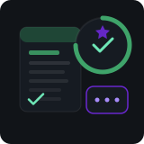

ResumeAI: Intelligent Career Coach
AI-powered resume platform featuring intelligent scoring, ATS-focused feedback, resume comparisons, targeted optimization, scan history tracking, and an integrated career guidance chatbot. Built with Next.js, TypeScript, and OpenAI APIs.
- Next.js
- TypeScript
- OpenAI